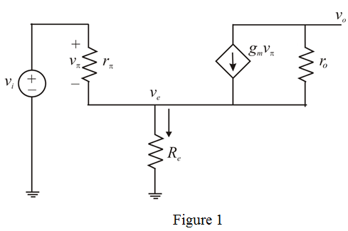
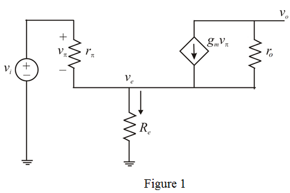
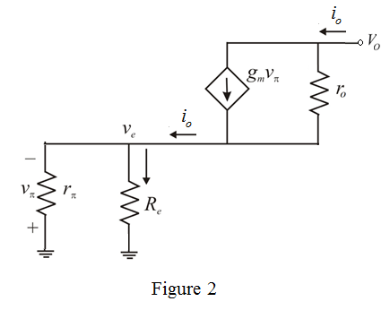

Refer to Figure P7.44 (a) in the textbook for the CE amplifier with an emitter-degeneration resistance .
.
The equivalent hybrid model (high frequency) for the circuit is shown in Figure 1.

Refer to Figure P7.44 (a) in the textbook for the CE amplifier with an emitter-degeneration resistance.
The equivalent hybrid model (high frequency) for the circuit is shown in Figure 1.

Apply Kirchoff’s current law at node  .
.
…… (1)
Apply Kirchoff’s voltage law to the input loop

Substitute for in equation (1).
Divide the equation by  .
.

…… (2)
From the circuit, the voltage  is,
is,
Substitute for in equation (2).

Thus, the open circuit voltage gain is, .
The equivalent circuit for calculating  is shown in Figure 2.
is shown in Figure 2.

The output voltage is,
Simplify further.
Now, the short circuit transconductance is,
Approximate the numerator and denominator terms.
Thus, the short circuit transconductance is,
Calculate the value of  .
.
Calculate the value of .
The output resistance is,
Thus, the output resistance is, .
Calculate the value of  .
.
Thus, the short circuit conductance is, .
Calculate the value of  .
.
Thus the open-circuit voltage gain is, .
The output voltage is,
Thus, the voltage gain is, .